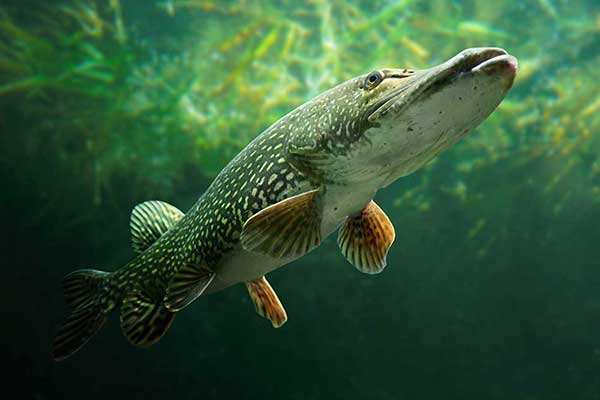

Karp

Karp to ryba słodkowodna z rodziny karpiowatych, pierwsza udomowiona i najważniejszy gatunek hodowlany w naszym kraju. Występują dwie odmiany karpia. Pierwsza to dziki karp - sazan, a druga to karp udomowiony.
Lin
Lin to ryba słodkowodna z rodziny karpiowatych. Ciało tej ryby jest lekko bocznie spłaszczone, wydłużone. Łuski, pokrywające ciało, są drobne. Mięso lina jest bardzo smaczne. Ryba ta jest ceniona przez wędkarzy.
Leszcz
Leszcz (Abramis brama) to dość duża ryba z rodziny karpiowatych, pospolita w naszych wodach. Ryba ta ma bocznie spłaszczone ciało. Leszcz jest cenioną rybą przez wędkarzy ze względu na bardzo smaczne mięso.
Płoć
Płoć, płotka (Rutilus rutilus) to niewielka ryba słodkowodna z rodziny karpiowatych, jedna z najczęściej spotykanych w naszych wodach słodkich. Płotka to ulubiony obiekt polowań szczupaka, sandacza i okonia.
Karaś Pospolity
Karaś pospolity (Carassius carassius) to jedna z najczęściej łowionych przez wędkarzy ryb w Polsce. Należy do rodziny karpiowatych. Łuski mają złoty połysk. Zęby gardłowe są ustawione w pojedynczym szeregu. Mały pysk nie jest wyposażony w wąsy.
Pstrąg potokowy
Pstrąg potokowy (Salmo trutta m. fario) to gatunek ryby z rodziny łososiowatych. To biologiczna odmiana troci, która przystosowana jest do życia w wodach słodkich. Ciało jest bocznie spłaszczone.
Amur Biały
Amur biały (Ctenopharyngodon idella) to gatunek ryby z rodziny karpiowatych. Ciało jest walcowate, podłużne. Głowa jest dość szeroka z otworem gębowym końcowym. Łuska pokrywająca ciało jest dość duża i gruba, ciemna na brzegach.
Boleń Pospolity
Boleń pospolity, rapa, rap (Aspius aspius) to europejska ryba z rodziny karpiowatych o wąskim, długim ciele, spłaszczonym bocznie. Płetwy mają czerwonawy odcień. Grzbiet jest stalowy, boki srebrne, spód jest białawy. Szczęka dolna ma trójkątną wypukłość.
Okoń
Okoń europejski (Perca fluviatilis) to dość pospolita w Polsce ryba drapieżna z rodziny okoniowatych. Po bokach widać ciemne pasy, które maskują rybę w otoczeniu. Jest ich od pięciu do dziewięciu. Jest to ryba ceniona w wędkarstwie.
Węgorz
Węgorz, węgorz europejski (Anguilla anguilla) to ryba z rodziny węgorzowatych, przypominająca węża. Wydłużone i walcowate ciało, pokryte grubą warstwą śluzu, jest zielonobrązowe lub szarobrązowe, spód jest żółtawy lub srebrny.
Szczupak
Szczupak, szczupak pospolity (Esox lucius) to drapieżna ryba słodkowodna z rodziny szczupakowatych. Ma ciało wydłużone. Płetwa odbytowa i grzbietowa znajduje się niedaleko ogona.